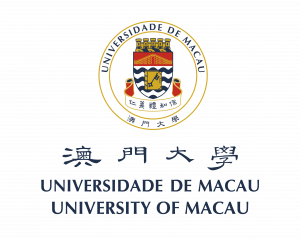

News
[2023-08-02] One paper has been accepted by Neurocomputing.
[2023-06-21] Our paper Natural Language Processing for Smart Healthcare is selected as a Featured Article of IEEE Reviews in Biomedical Engineering (IF 17.6).
[2023-05-17] Binggui Zhou, Kehui Li, Chengzhi Ma, Chengwang Ji, and Prof. Shaodan Ma won the Winning Prize of the First 6G Intelligent Wireless Communication System Competition held by the IMT-2030 (6G) Promotion Group and Guangdong OPPO Mobile Communications Corp., Ltd.
[2023-01-04] One paper has been accepted by Knowledge-Based Systems.
[2022-09-22] One paper has been accepted by IEEE Reviews in Biomedical Engineering.
[2022-04-24] Binggui Zhou and Prof. Shaodan Ma won the Silver Prize of the First 6G AI Competition held by the Guangdong OPPO Mobile Communications Corp., Ltd.
[2022-03-03] One paper has been accepted by Applied Soft Computing.